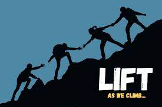

Where do I want to take my career in the next 5 years?

The great hurdle of making the breakthrough into security has been overcome. It took many long nights and early mornings, studying and investing in myself to gain the nesscarry skills needed to add value to an employer.
This article however is about, “Now what?”. Where am I going next with my career? Well when I approach any questions about the future I ask myself, “What does good look like?”.
What is the end goal in 5 years?
To be able to help companies secure their infrastructure to the best standards and have my input be taken with high regard. To have influence to help other aspiring Information Security professionals break into the field by having a say in the hiring process.
Breakdown
- Be Security Ninja.
- Have influence within my company.
- Help aspiring InfoSec candiates accomplish their goal.
Now let me break it down each goal.
Become a Security Ninja
How I see it, there are core knowledge points when it comes to InfoSec.
- Networking
- Linux
- Windows
- Programming
- Exploitation
- Defense
- Security Standards (NIST,ISO,CIS)
I plan on investing time, energy, and money in books, courses, and personal projects to learn these skills.
Have influence in my organization
One of the things I love about working in Tech is the sense of impact you have on the success of our company. For example taking down a Domain Controller in the network, may cause your co-workers to not be able to login into their devices potentially losing large amounts of profits.
This understanding that the decisions I make during work have a great impact to many of my co-workers and some who I call my friends, gives me a deep sense of purpose and meaning. I take my work serious and thus would like an impact on the decisions being made at my company.
I want to become the guy in the room who is always conscious of the 1st, 2nd, and 3rd consequences of each action. This takes having a deep understanding of how the infrastructre is configured and why. It also takes being aware of any changes happening to the infratructure and asking the right questions.
I want to become the person my director can reliably depend on and look to, to make sure things run smoothly. This takes time and takes proactivly looking to improve processes. I do feel I need to be aware of my limitations and not accept respondsibilities I'm not ready for.
I want become a leader in my organzation. I want to be a leader who leads by example and knows how to motivate the those around them to exceed their potential.
By doing the above I feel having influence will come nataurally.
Help aspiring InfoSec professionals accomplish their goal
There’s so many things to learn in this space. I know I am just starting out so I don’t have much to offer, but I promise I will never close the door on anyone who asks for help. If there is any actual value I can add, I will. If you want to reach out to me, slip into my dms on twitter @jd_essence.
